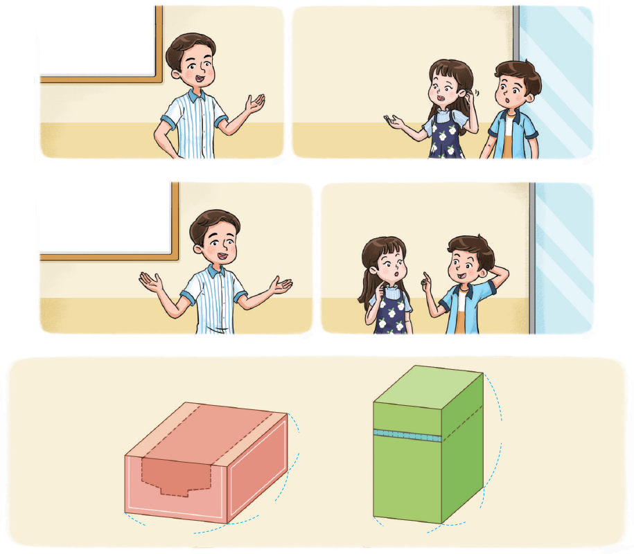

- 물음 1
- 물음 2
-
직육면체의 부피를 구하는 방법은 무엇인가요?
어떤 상자의
겉넓이가 더
작을까?겉넓이요?
넓이는 무엇인지
알지만 겉넓이는
처음 들어요.겉넓이란
물체 겉면의 넓이를
말한단다.그럼 직육면체의
겉넓이는 직육면체
여섯 면의 넓이의
합을 뜻하겠네요.가9 cm8 cm5 cm나6 cm6 cm10 cm예(가로)×(세로)×(높이)입니다. -
직육면체의 겉넓이는 무엇을 뜻하나요?
어떤 상자의
겉넓이가 더
작을까?겉넓이요?
넓이는 무엇인지
알지만 겉넓이는
처음 들어요.겉넓이란
물체 겉면의 넓이를
말한단다.그럼 직육면체의
겉넓이는 직육면체
여섯 면의 넓이의
합을 뜻하겠네요.가9 cm8 cm5 cm나6 cm6 cm10 cm예직육면체 겉면의 넓이입니다.